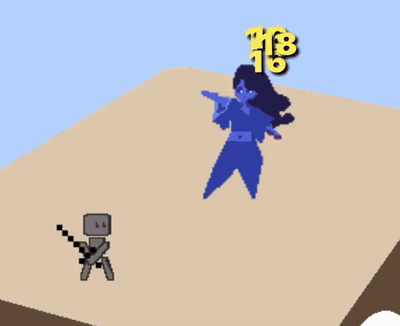
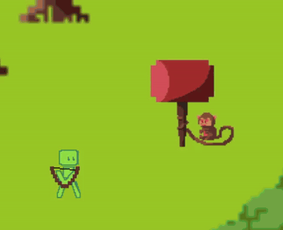

チュートリアルを見直す
設定から、チュートリアルの再表示を選べます。ワークアウト、バトル、キャラクター、Spotterなど、確認したい案内を開いてみてください。
使い方ガイド
メニュー、トレーニングの記録、バトルの操作。知りたいところから、ひとつずつ確認できます。
ProxyFitにログインしたら、知りたい項目を選んでください。まずは概要を確認し、詳しい操作は必要な項目だけ開いて読めます。
種目を現在のワークアウトに追加し、最後に完了操作をすると、履歴の保存と報酬の反映が行われます。
「ワークアウトに追加」は、その日の入力をまとめる操作です。保存の確定は、最後の「ワークアウト完了」で行います。確定前に内容を見直せます。
kg・lbなど使いたい単位を選び、セットごとに結果を入力します。自重の記録や、通常・ウォームアップ・限界セット・ドロップセットといったセットの種類も選べます。
| セット | 重量 | 回数 |
|---|---|---|
| 1 | 40 kg | 10 |
| 2 | 40 kg | 8 |
有酸素運動やスポーツでは、その活動で使える入力欄を使います。時間・距離・消費カロリーなど、実際に行った内容を記録してください。必要に応じて、記録項目を追加・削除できる画面もあります。
よく使う種目の組み合わせをルーティンとして保存すると、別の日にも使えます。ワークアウト内のルーティン機能で作成するほか、完了画面からその日のワークアウトをルーティンとして保存できます。保存済みのルーティンを選んで有効にし、その日の結果を入力します。
自分だけの種目を作るときは、種目カテゴリ内の追加機能を開き、使いたい記録項目を選びます。無料版はルーティンを最大4件保存でき、プレミアムでは保存数の制限がなくなります。
ワークアウトからワークアウト履歴を開きます。日付や種目を展開すると、記録したセットを確認できます。無料版はエクササイズ履歴を直近3か月まで確認でき、プレミアムでは全期間の履歴と詳細な分析を利用できます。
担当コーチがいる場合は、コーチング画面から割り当てられたワークアウトを開きます。種目ごとの指示を確認し、通常の記録機能で入力してください。関連付けられたワークアウトを完了すると、コーチも結果を確認できます。
記録画面を整理し、種目に必要な入力欄を見つけやすくしました。セット名をタップすると、ウォームアップ・通常・限界・ドロップセットの種類を選べます。追加の記録項目は、項目の追加・削除で調整できます。
入力中は次へで次の欄へ進み、最後の欄では完了でキーボードを閉じます。距離や消費カロリーは小数も入力できます。プレミアムでは、記録中に前回の種目の結果を確認できます。
ワークアウトでキャラクターを育て、続いていくステージに挑戦します。バトルは自動で進み、タップで攻撃に参加することもできます。フィットネスの記録だけを使うこともできます。




ステージに挑戦では、次の未クリアステージに挑みます。勝つと自動で次へ進みます。7体のボスが、難しくなりながら繰り返し登場します。
コインを集めるでは、最高クリアステージより2つ前のステージを繰り返します。最低はステージ1です。負けると自動でコイン集めに戻ります。運動やステータス強化のあと、再び「ステージに挑戦」を選べます。
最高クリア記録は負けても残り、毎週リセットされません。週間のスキン報酬は引き続き入れ替わります。
ほかの画面を使っている間も自動バトルは続きます。アプリを開き直す、またはバックグラウンドから戻ると、保存した自動スキルなどの設定をもとに最大12時間分の進行とコインが計算されます。
留守中にタップ操作をしたことにはなりません。進めるステージはキャラクターの強さと設定によって変わります。成果の画面で経過時間、コイン、新しくクリアしたステージ数を確認できます。コインは自動で加算されます。
設定したスポッターは、最初は15秒後、その後は60秒周期で自動的に登場し、15秒間メインキャラクターと交代します。進行中の攻撃が終わってから交代するため、実際の切り替わりが少し遅れる場合があります。
スポッターが出ている間、メインキャラクターの攻撃とタップスキルは待機し、クールダウンは進みます。終了するとメインキャラクターが戻ります。戦闘中に呼び出しボタンを押す必要はありません。
各クラスの上位タップスキルは、そのクラスを選ぶと最初から無料で使えます。同じスキルを自動スロットで使うには、全クラス共通でキャラクターレベル5が必要です。
| クラス | 無料のタップスキル | 自動用 |
|---|---|---|
| ウォリアー | ウルシスラッシュ | レベル5 |
| アーチャー | アローボム | レベル5 |
| シーフ | ビッグブルー | レベル5 |
| メイジ | プリズマティックライトニング | レベル5 |
キャラクターXPはワークアウトの記録で獲得します。バトルのステージやコインでは、このレベル条件を飛ばせません。これらの初期スキルにスキルチケットは不要です。
ワークアウトを完了すると、キャラクターの経験値とステータスポイントを獲得します。筋力はダメージ、持久力はHP、スピードは攻撃の間隔に関わります。
その日最初のエクササイズを記録すると、12時間のバトルダメージ＋50％ブーストが始まります。同じ日に繰り返し記録しても、このブーストの時間は延長されません。
バトルの勝利でバトルコインを獲得します。ステージ報酬を受け取るでコイン10枚をスポッターポイント1点に交換できます。初クリアには追加のポイントがあり、繰り返しではコインを獲得できます。
キャラクターやスキン、スポッターなどの選択肢はショップで確認できます。ワークアウトの記録では報酬ボックスが出ることもあります。バトルを遊ぶかどうかにかかわらず、食事・ワークアウト・コーチングの機能を使えます。
上半身・下半身の種目を、短い実演動画、参考写真、フォームのヒントで確認できます。
エクササイズガイドを見る →アプリ内の説明を見直したり、機能ごとのガイドへ進んだりできます。